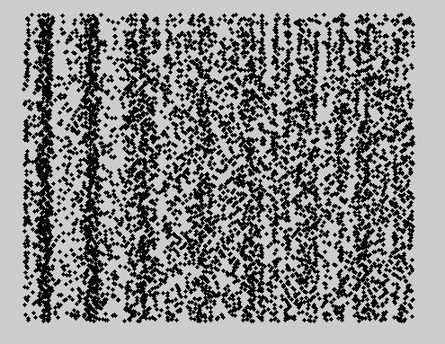
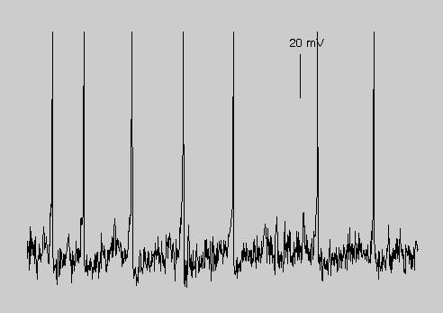
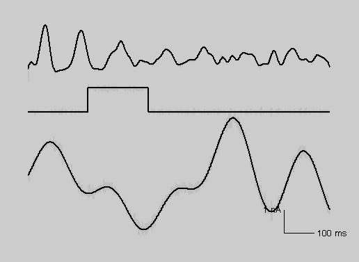

This folder contains Matlab code related to Tripp BP & Eliasmith C, 2007, Neural populations can induce reliable post-synaptic currents without observable spike rate changes or precise spike timing. The code is organized into the following sub-folders: exp: scripts for running numerical experiments fig: scripts for producing article figures lib: library functions that are called by the above scripts Note that some of the figure scripts require data files that are produced by the experiment scripts. This code has been tested with Matlab versions 6.5, 7.0.1, and partially tested in 7.8.0. Usage: Download and extract this archive. After starting matlab add the lib folder to the path addpath(path, '(where you put it)\lib`) then cd to the fig folder and type a figure file, for example, figure1 to start execution. This first one generates figure 1a, 1b, and 1c:   